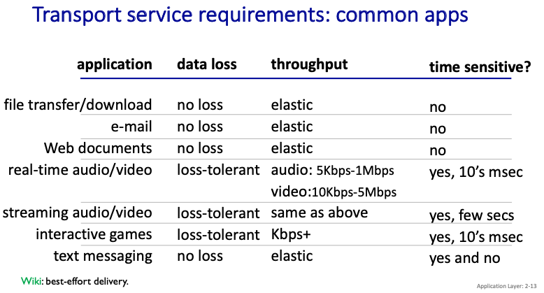
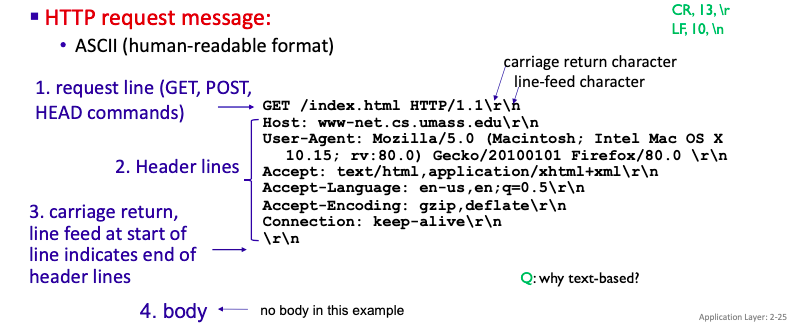
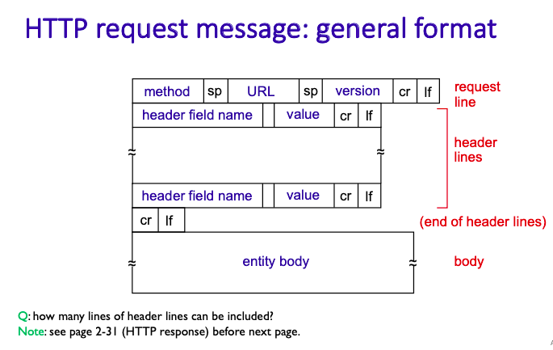
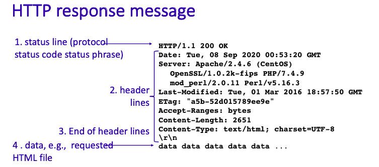
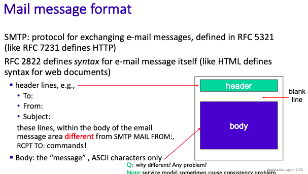
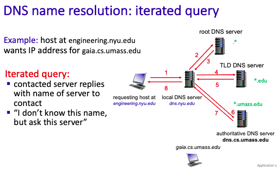
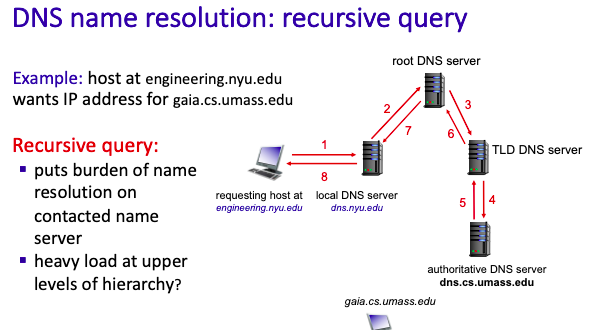
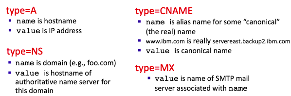
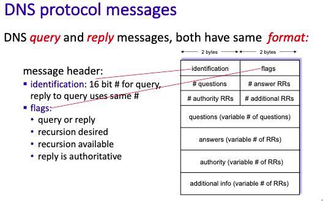

Chapter 2. Application Layer
2.1 Priciples of Network Applications
注意，Network application 的內容基本上與network-core 無關，基本上就在意使用者就好
Client-server
多數的application都是以Client-server的架構進行，也就是溝通的兩端，一個是Client，一個是Server。
而server端通常是常駐開啟的，並且是被動接收資料，位於資料中心(data centers)，以及規模化
Client端是跟Server溝通的人，通常IP是浮動的。
Peer-Peer
與Client-server不同，沒有誰有特定的角色，互相幫助的感覺，本章後面會詳細提。
Processes communicating
在一台機器裡面運作中的程式，我們叫它process，這章特別提到它是因為，Application Layer的作用就是協助兩支在不同電腦的程式，利用網路來互相溝通，以下是一些常見的名詞先介紹一下：
Sockets
每個程式都有自己的socket，它像是一個通道，資料會從通道被丟進程序裡，為了找到另一頭程式正確的socket，我們需要IP和Port，不然沒有辦法辨別你要丟給誰（因為一台機器裡面可能有多個程序）
Application-layer protocol 規範了一些什麼？
message syntax: 資料溝通的格式
type of messages exchanged：也就是有幾種溝通的形式
message semantics:簡單來說很像在定義術語，例如寫一個大寫P在第三行會是什麼意思
rules:該在什麼時候丟訊息、回傳訊息等等的規則
Application and Transport Layer
在設計一個Application Layer 的時候，因為不同的Application有不同用途，有一些不同的地方需要取捨，因此要搭配不同的Transport Layer來達到客制化，以下是一些需要注意的點：
data integrity:資料有沒有遺失？例如傳送檔案的application，應該要盡量避免檔案出現遺失，而音樂、影片可以在一定的tolerate下允許loss
timing: 它要不要求即時送到資料，還是可以慢慢來
throughput: 一次需要多少的資料傳輸量
security:希望資料不要被別人看到
下表是一些常見的application以及它的需求

應應以上的需求，我們的Trasport Layer有以下兩個分類
TCP service
reliable transport
flow control:sender不會傳讓receiver爆掉的資料量
congestion control: sender不會在網路快爆調的時候傳資料
connection-oriented: 需要兩方都準備好才會開始
而TCP沒辦法要求的是：1. 時間 2. mininum throughput 3. security
UDP service
基本上就只有傳送的功能，TCP有的它都沒有，但也因此會比較快一些（不用繁瑣的檢查）
下表是一些常見的Application和transport的配對

2.2 The Web and HTTP
Web簡單的感覺是：你用瀏覽器操做的application能做到的
而支持這些web application 的Protocol是HTTP(Hypertext transfer protocol)
以下一些HTTP小科普：
HTTP uses TCP:當然，你不希望看到別人網站是亂碼
「Server」 listens at port 80
HTTP is stateless:也就是這次斷線之後，基本上他不知道你是誰（下面的章節會補充怎麼彌補）
而HTTP有兩種不同的connect 模式第一種Non-persistent HTTP/1.0，它每一次傳送一個檔案，就要「建立」一次連結，而模式第二種Persistent HTTP比較聰明，吃到request的時候會把TCP通道開著，假如要傳多個檔案就會一次傳過去。
Request message
是Web的Client端跟Server溝通的訊息，廢話不多說，上圖


而request最需要注意的事request method，會因應跟web server有不同的互動方式有不同的方法，常見有以下幾種：
GET 就取得，通常要加東西就在後面加上?
POST 在request message 的後方還會有entity body去裝額外的資訊送給server
HEAD 不常用
PUT 不常用
DELETE 不常用，但應該很好理解
Response message
而Response message是Server依照Client的請求還有程式執行的狀況，回應給client的內容，以下是結構：

而其中response有status codes,如其名，就是讓Client知道Server的狀態
200 OK
request成功，server會把client要的object或者想執行的指令給它301 Moved Permanently
requested object被移走了，server會把object新的位子附在Client裡面400 Bad Request
request message not understood by server404 Not Found
requested document not found on this server,以及伺服器會給你他們家的404畫面505 HTTP Version Not Supported
Web caches(aka proxy servers)
Web caches是什麼？
他是一個位於client和server中間的角色，當client有request的時候，web caches會先檢查自己的內容有沒有過期，假如有，那caches會去跟server要新的資訊，要到之後respond給client，假如沒過期就直接傳給client。
為什麼需要它？
對client的好處：假如一間公司十個人需要一個網站的網頁，十個人都透過公司網路連到外部，並且跟server提取，那大家會把網路占滿，假如公司內部有caches，那公司網路只會由caches 發送一次request取得網頁資料，其餘公司內部只要利用內部網路跟caches來溝通就好。
對server的好處：減輕負擔好欸。
Conditional GET
至於Web caches要怎麼知道他的東西過期了沒有，那就要用到Conditional GET
Client發送的GET包含時間(If-modified-since:
2.3 Electronic Mail in the Internet
大家常用的Email包含三個部分：
user agents: 使用者讀信、送信的地方
mail servers
simple mail transfer protocol: SMTP
為什麼需要多一個mail servers?不能直接user agents 互傳？
因為user agents不一定會整天開著，所以要有一個隨時可以收信的機器開著。
簡單講解整個Email送信的過程(以A送信給B當作範例)：
A使用他的user agents 發信給A自己的Mail server
A 的mail server發信給B的mail server
B 從他的mail server讀信（注意，這個動作不是SMTP）
名詞介紹
Mailbox: 在mailserver裡面，主要存user收到的郵件
message queue: 準備送出去的message
SMTP規範了什麼？
首先，他是一個以push為主的protocal，例如剛剛例子的A 從user agent push 到他的mail server，以及A server push 郵件內容到 B server。
他是以25作為port
連線的過程：交握、傳送資料、關閉
內容以ASCII 為主
Mail formate 
2.4 DNS-The Internet』s Directory Service
在前面的內容有提到，在網路世界中，資料的目的地有ip還有port，但對於普通人來說，忽然背一串數字做為地址非常的不直覺，因此至做的Domain Name 輔助大家閱讀地址，也因為這個服務，因此需要Domain Name Server 還有它的Protocal。
DNS主要有什麼
分散式的資料庫：讓使用者可以查詢手上的Domain Name是對應哪個IP，之所以不採取中央式的是因為害怕那台中央的掛掉，大家都不用查了，因此要分工減少負擔（下面會細談）
application-layer protocol：要讓DNS知道你傳的這則資訊裡面，哪個部分是你想要找的ip，哪個部分是代表其他意思，因此要有protocol的規範。
DNS的分工
DNS有分為三個不同的角色
Root：專門接收所有的Domain Name，並且依照最後面的詞（.com,.org,.edu,…）發包給不同的Top Level Domain
Top Level Domain：專門接收屬於自己後面的詞的Domain Name，並且再看他的第二後面的詞是什麼，發包給Authoritative server
Authoritative：發真正的IP給你
local DNS server：你家附近的DNS（或者你自己建立的)，可以記錄你常用的DNS，以及幫你問root server，並且等待他們的回覆。跟HTTP的Proxy很像。
iterated query 
recursive query 
DNS 結構
DNS主要是查詢網址，但為了對應不同的情況，因此會有一些小工具釐清狀況
TTL：主要記錄DNS裡面的IP有效時間，避免你查詢的目標換IP之類的
DNS用UDP來查詢
RR(resource records)
可以發現剛剛的iterated query中，雖然都是發DNS，但是接受到DNS之後，所做的後續行動有所不同（例如local DNS收到root之後是繼續問下去，而接收到Authoritative DNS後就要回傳給user，因此要有格式來判斷一下有什麼差別
格式：(name, value, type, ttl)

備註：
type=A：最普通那種
type=NS：告訴你想查詢的Domain Dame 的 Authoritative DNS是誰，通常在這之後會附上一個Type=A的訊息，告訴你Authoritative DNS在哪
type=CNAME：告訴你公司內部其實有酷酷的名字，跟公開那個不一樣。（可能為了利於管理，以及分攤伺服器工作量）
type=MX：假如你要查詢email再找它

備註：前面的欄位主要是告訴你後面佔了多少空間，例如#questions裡面寫3，那代表下面的questions裡面有三個問題。
其他補充
如何註冊DNS
跟域名管理公司買 e.g. Go Daddy 並且要有一個固定IP 或者 有其他服務可以一直更新
2.5 Peer-to-Peer File Distrubution
Note: 以上其他的東西都是Server-Client 的設計
特色
每多一個Peer，整個網路就更強大
兩千年的時候比較火紅
假如打電話要通過很遠，會用P2P連線（但用P2P其他人就沒辦法監控打多久之類的）
傳輸效率
Client-Server 情境：將伺服器上傳一個檔案的資料量寫作$F$,上傳速率寫作$u_S$，總共有$n$位使用者，其下載速度為$d$,最慢的那位寫做$d_{min}$
理論速度$D_{C-S} \geq \max{NF/u_S,F/d_{min}}$
P2P
$D_{P2P} \geq \max{F/u_S,F/d_{min},NF/(u_S + \sum u_j)}$
這邊要注意的是最慢那位$F/d_{min}$之中的$F$是很多份小chunks，並且每個小chunks都來自於不同人
而$NF/(u_S + \sum u_j)$的部分是因為整個系統的人都可以做上傳這件事情。
Others
BitTorrent, 一個檔案P2P服務提供者，他有一個tracker(server)去知道大家的資訊，讓你知道可以跟誰$P2P$
2.6* Video Streaming and Content Distribution Networks
（老師沒講）
2.7* Socket Programming: Creating Network Applications
（老師沒講）